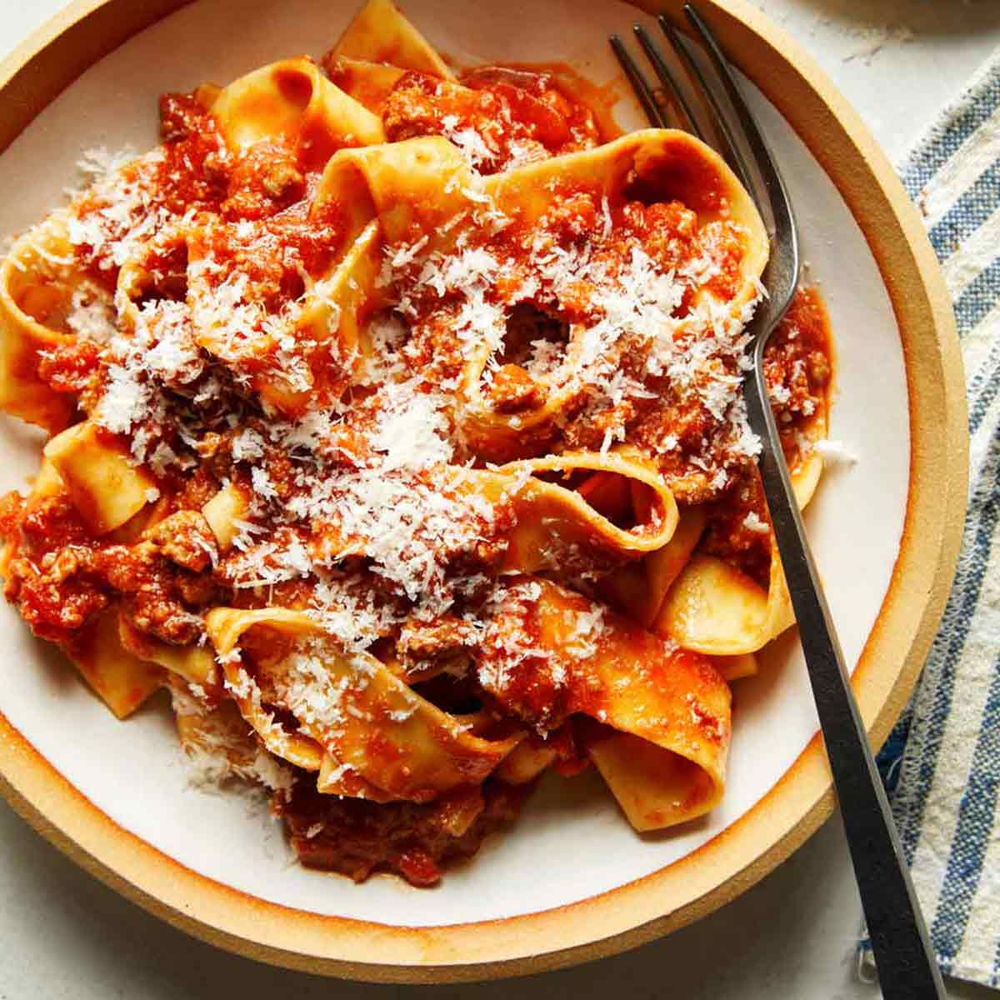

Bolognese

A simple Bolognese recipe for excellent chunky pasta sauce with beef, pork, lots of vegetables, and tons of flavor.
Ingrediants
- 2 tablespoons olive oil
- 1 large onion, minced
- 4 Slices bacon
- 1 clove garlic
- 1lb Ground beef
- 1.5lb Ground pork
- 6 ounces tomato sauce
- 2 Carrots, shredded
- 1 Stalk Celery, chopped
- white wine
- chicken stock
- basil
- oregano
- salt, and pepper to taste
- 1lb Pasta
Steps
- Warm oil in a large skillet over medium heat. Sauté onion, bacon, and garlic in hot oil until bacon is browned and crisp, about 10 minutes
- Place the same large skillet over medium-high heat. Cook and stir ground beef and pork in the hot skillet until browned and crumbly
- Stir bacon mixture, tomatoes, mushrooms, tomato sauce, carrots, celery, wine, stock, basil, oregano, salt, and pepper into meat mixture
- bring a large pot of lightly salted water to a boil. Add pasta and cook in boiling water until al dente, 8 to 10 minutes; drain.
- Serve sauce over hot pasta